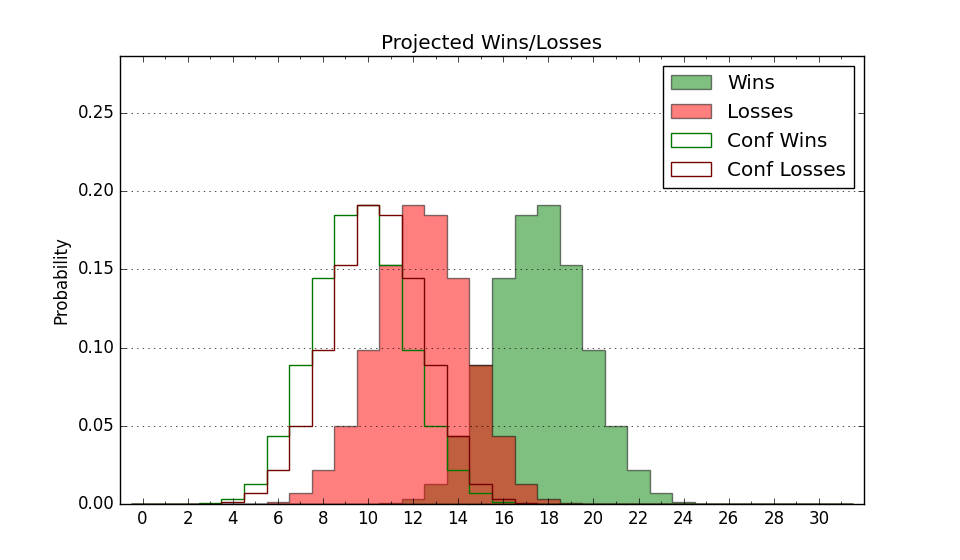

| Home | Game Probabilities | Conferences | Preseason Predictions | Odds Charts | NCAA Tournament |
| City: | Syracuse, New York | |
| Conference: | ACC (6th)
| |
| Record: | 2-2 (Conf) 10-4 (Overall) | |
| Ratings: | Comp.: 10.4 (77th) Net: 11.3 (76th) Off: 104.4 (164th) Def: 93.0 (23rd) SoR: 68.1 (39th) |
| Remaining | ||||||
|---|---|---|---|---|---|---|
| Date | Opponent | Win Prob | Pred. | |||
| 1/13 | @ North Carolina (13) | 9.8% | L 67-84 | |||
| 1/16 | @ Pittsburgh (54) | 26.2% | L 67-75 | |||
| 1/20 | Miami FL (60) | 56.0% | W 78-77 | |||
| 1/23 | Florida St. (106) | 71.9% | W 77-70 | |||
| 1/27 | North Carolina St. (81) | 65.6% | W 75-70 | |||
| 1/30 | @ Boston College (94) | 38.9% | L 74-77 | |||
| 2/3 | @ Wake Forest (55) | 26.3% | L 72-79 | |||
| 2/7 | Louisville (205) | 87.8% | W 82-67 | |||
| 2/10 | Clemson (25) | 42.1% | L 73-76 | |||
| 2/13 | North Carolina (13) | 27.1% | L 72-80 | |||
| 2/17 | @ Georgia Tech (132) | 53.0% | W 72-71 | |||
| 2/20 | @ North Carolina St. (81) | 35.9% | L 71-75 | |||
| 2/24 | Notre Dame (140) | 80.3% | W 70-60 | |||
| 2/27 | Virginia Tech (56) | 54.9% | W 73-72 | |||
| 3/2 | @ Louisville (205) | 67.8% | W 77-72 | |||
| 3/5 | @ Clemson (25) | 17.6% | L 69-80 | |||
| Previous | Game Score | |||||
| Date | Opponent | Win Prob | Result | Off | Def | Net |
| 11/6 | New Hampshire (196) | 87.3% | W 83-72 | 0.3 | -2.6 | -2.2 |
| 11/8 | Canisius (160) | 83.1% | W 89-77 | 17.5 | -18.0 | -0.5 |
| 11/14 | Colgate (147) | 80.8% | W 79-75 | -3.8 | -7.0 | -10.7 |
| 11/20 | (N) Tennessee (5) | 14.1% | L 56-73 | -16.6 | 12.4 | -4.1 |
| 11/21 | (N) Gonzaga (36) | 33.1% | L 57-76 | -19.2 | -1.6 | -20.8 |
| 11/28 | LSU (88) | 67.7% | W 80-57 | 8.7 | 16.0 | 24.7 |
| 12/2 | @Virginia (46) | 24.0% | L 62-84 | 1.3 | -33.1 | -31.8 |
| 12/5 | Cornell (112) | 73.6% | W 81-70 | -1.1 | 12.3 | 11.2 |
| 12/9 | @Georgetown (174) | 62.8% | W 80-68 | 10.5 | 1.1 | 11.6 |
| 12/17 | (N) Oregon (52) | 39.2% | W 83-63 | 9.4 | 25.1 | 34.6 |
| 12/21 | Niagara (282) | 93.5% | W 83-71 | -5.3 | -5.5 | -10.8 |
| 12/30 | Pittsburgh (54) | 54.7% | W 81-73 | 4.0 | -1.5 | 2.4 |
| 1/2 | @Duke (8) | 8.9% | L 66-86 | -2.7 | -1.4 | -4.2 |
| 1/10 | Boston College (94) | 68.5% | W 69-59 | -9.1 | 19.3 | 10.2 |
| Stats & Trends | |||||
|---|---|---|---|---|---|
| Current | Day | Week | Month | Season | |
| Composite | 10.4 | +0.5 | +0.9 | +2.1 | +4.9 |
| Comp Rank | 77 | +1 | +5 | +13 | +18 |
| Net Efficiency | 11.3 | +0.5 | +1.0 | +1.7 | -- |
| Net Rank | 76 | +1 | +6 | +10 | -- |
| Off Efficiency | 104.4 | -1.0 | -1.0 | -0.8 | -- |
| Off Rank | 164 | -16 | -22 | -29 | -- |
| Def Efficiency | 93.0 | +1.4 | +2.0 | +2.6 | -- |
| Def Rank | 23 | +10 | +18 | +32 | -- |
| SoS Rank | 30 | -7 | +12 | +14 | -- |
| Exp. Wins | 17.6 | +0.6 | +0.6 | +1.8 | +4.1 |
| Exp. Conf Wins | 9.6 | +0.6 | +0.6 | +1.1 | +1.6 |
| Conf Champ Prob | 0.3 | +0.1 | -0.0 | -0.0 | -0.2 |

| Advanced Stats | ||
|---|---|---|
| Stat | Value | Rank |
| Off Eff FG % | 0.505 | 162 |
| Off Ast Ratio | 0.146 | 136 |
| Off ORB% | 0.264 | 218 |
| Off TO Rate | 0.140 | 116 |
| Off FT Ratio | 0.371 | 88 |
| Def Eff FG % | 0.467 | 68 |
| Def Ast Ratio | 0.127 | 76 |
| Def ORB% | 0.286 | 218 |
| Def TO Rate | 0.198 | 11 |
| Def FT Ratio | 0.269 | 57 |